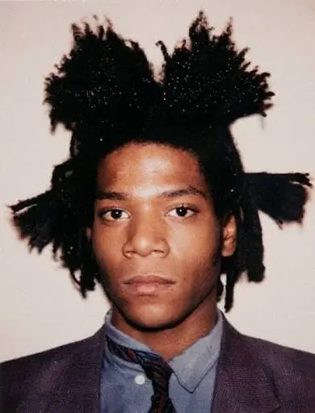
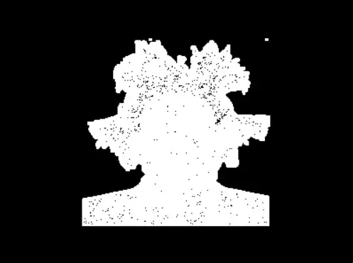
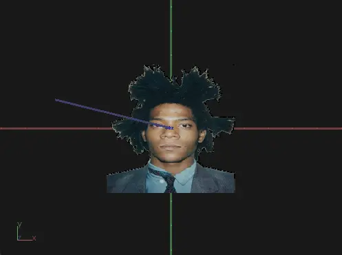
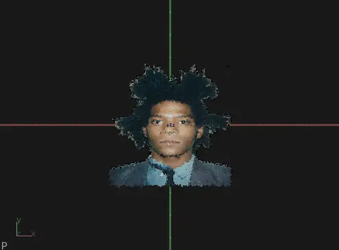
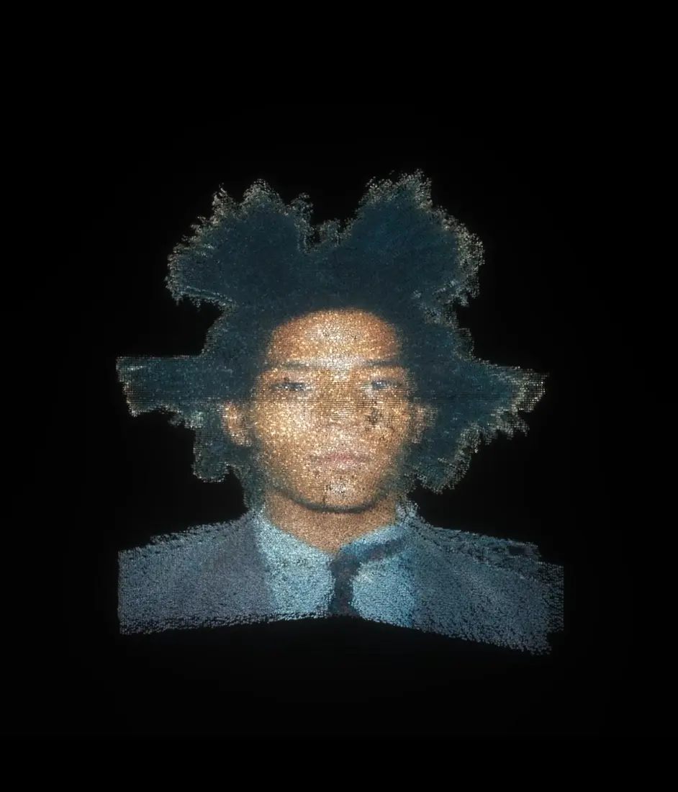
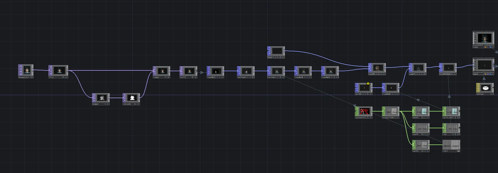
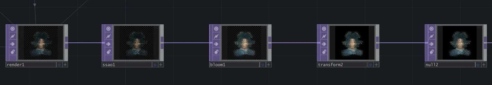

Real-Time Visual Study · 2026
Orbit
A portrait given depth and set into continuous motion.
Orbit transforms a two-dimensional photograph into a three-dimensional field of particles. As the portrait completes a continuous 360-degree rotation, familiar features stretch into layers of color, light, and point data, revealing a different image from every angle.
Overview
2026What does a photograph become when it can no longer hold a single point of view?
A photograph usually offers one fixed perspective. I wanted to see what would happen if that surface were given depth and allowed to move through space. Using TouchDesigner, I reconstructed a photographic portrait as thousands of individual points and placed the resulting image into continuous rotation.
Translation
2026The image leaves its surface.
Each pixel contains two essential pieces of information: its position and its color. By translating that information into point data, the portrait could move beyond its original frame while still retaining traces of the source image.
- 01Photograph
- 02Pixel information
- 03Point data
- 04Depth
- 05Particle portrait





Source photograph: Andy Warhol, Jean-Michel Basquiat, Polaroid, 1982.
System
2026Building depth from pixels.
- 01Imported the source photograph
- 02Sampled its pixel position and color
- 03Converted the pixels into points
- 04Distributed the points across three-dimensional space
- 05Applied continuous rotation and post-processing


- 01Image data
- 02Point generation
- 033D transformation
- 04Rotation
- 05Post-processing
- 06Output
Motion study
2026Recognition shifts with perspective.
From the front, the points return to a recognizable portrait. As the system rotates, the face stretches across layers of depth and becomes increasingly abstract. The source image remains present throughout the movement, but no single angle contains the entire experience.
Visual treatment
2026Color holds the image together.
Because the portrait is constructed from thousands of independent points, color becomes the element that preserves its visual identity. Glow, contrast, particle density, and movement were refined to maintain recognition without flattening the sense of depth.
Final output
2026The image never settles.
The finished portrait exists between image and object. It remains tied to its photographic source while continuously changing through depth, perspective, and motion.
Reflection
2026Orbit taught me how to translate image data into geometry and how to use movement to reveal depth inside a two-dimensional source. The primary challenge was preserving enough visual information for the portrait to remain recognizable while allowing the particle structure to become expressive from other perspectives.
With further development, I would explore how sound or viewer movement could influence the speed, direction, and depth of the orbit.